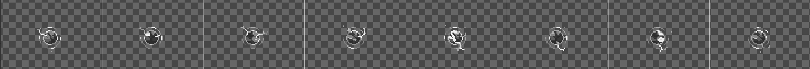
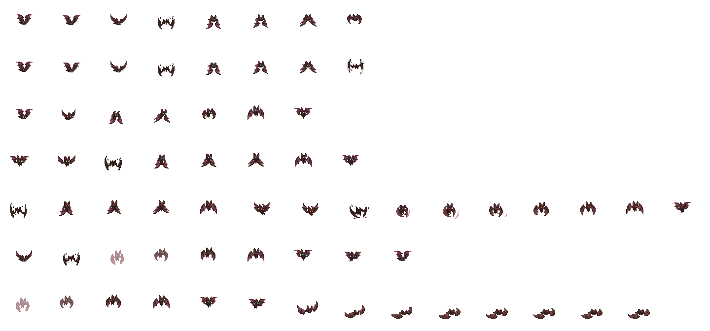
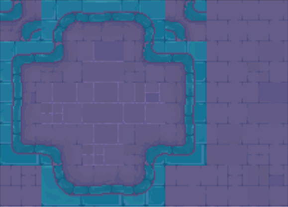

Ein Einblick in die aktuelle Struktur und wie du mitwirken koenntest.
Hoher Kontrast, klare Silhouetten, helle Kerne mit dunklen Umrissen. Jedes Element hat seine eigene Identitaet durch Form und Farbe — auch in den dichtesten Bullet-Hell-Momenten muss sofort erkennbar sein, was gefaehrlich ist.
Das Spiel basiert aktuell auf Epic RPG World Complete Collection von RafaelMatos. Das ist die visuelle Grundlage fuer Tiles, Props und Basis-Sprites.
Ziel ist nicht, dieses Pack zu ersetzen — sondern es gezielt mit eigenen Sprites, Grafiken und Animationen zu erweitern, vor allem dort, wo es am spezifischsten fuer Shardborne werden muss: Boss- und Gegneranimationen, Kampfeffekte, und punktuell Props fuer einzelne Themenbereiche.
Das sind alle Effekte, Objekte und Faehigkeiten, die theoretisch elementar geformt werden koennen, damit sie spaeter in jedes Element uebersetzt werden koennen. Das haelt die visuelle Sprache ueber alle Elemente hinweg konsistent und macht es einfach, dieselbe Animation in mehreren elementaren Varianten anzubieten.
Der Artist zeichnet die Grundform komplett in Graustufen. Helligkeit steht dabei fuer Energie bzw. Intensitaet — der energetischste, intensivste Punkt einer Animation ist am hellsten, Raender und abklingende Bereiche sind dunkler. Die Transparenz (Alpha) des Sprites bleibt dabei erhalten und wird vom System nicht veraendert.
Aus diesem Graustufenbild liest das System pro Pixel die Helligkeit aus und ordnet sie einer Farbe auf einer Paletten-Rampe zu — eine geordnete Farbreihe von dunkel nach hell. Das Ergebnis: Die Form bleibt exakt gleich, aber die Farbgebung kommt automatisch aus der zugewiesenen Palette.
Bei einem Feuer-Projektil wird der hellste, energetischste Teil zu einem gelb-weißen Kern, die dunkleren Raender zu tiefem Orange bis Rot. Bei einem Blitz-Projektil laeuft exakt derselbe Graustufen-Workflow — nur mit einer anderen Palette: heller Kern wird zu Cyan/Weiß, dunklere Bereiche zu tiefem Blau/Violett. Die gezeichnete Form unterscheidet sich nicht, nur die Palette dahinter.

Boss- und Gegneranimationen werden als klassisches Spritesheet angeliefert: eine Zeile pro Aktion, von oben nach unten. Alle Frames liegen in derselben Canvas-Groesse und mit demselben Pivot-Punkt, damit die Animation im Spiel sauber aufgereiht werden kann.
Am Beispiel der Fledermaus: 96×96 px pro Frame, sieben Zeilen — Idle, Walk, Uebergang in den Angriff, Angriffs-Ausfuehrung, Angriff, Treffer, Tod. Genau wie bei den Projektilen gilt: Form und Timing kommen vom Artist, das Technische — Import, Slicing, Zustandswechsel — uebernimmt danach das System. Wichtig bleibt, was schon beim visuellen Stil galt: vor jedem Angriff genug Vorbereitungs-Frames fuer eine faire Reaktionschance.

Boeden werden nicht als einzelne, handplatzierte Grafiken gemalt, sondern als zusammenhaengendes Tileset nach einem festen Raster angeliefert. Jede Kachel landet an einer festen Position im Tileset — jede Position entspricht dabei einer Zelle im Raster.
Aus diesem Raster liest das Leveldesign-System (Rule Tiles) automatisch die passende Kachel fuer jede Zelle im Level, je nachdem, was ringsherum liegt: gerade Kanten, Aussenecken, Innenecken, Einzelstuecke. Das ist die Grundlage dafuer, dass Raeume und prozedural generierte Dungeons nahtlos zusammenpassen, ohne dass jede Kachel von Hand gesetzt wird.
